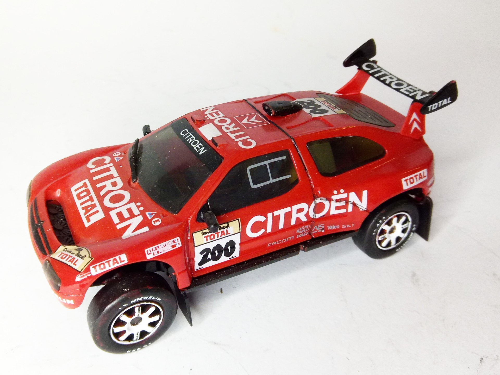
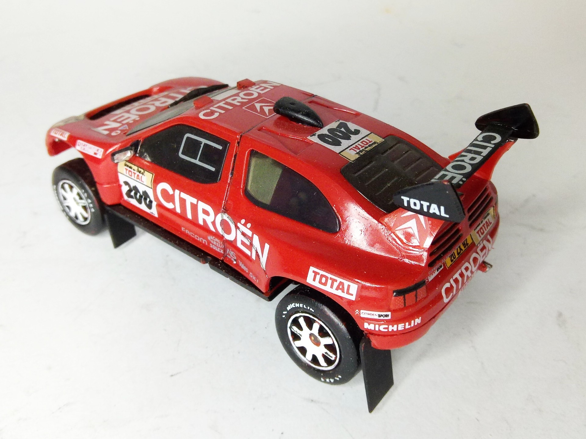

Auto e veicoli stradali · scale model archive
Citroen ZX Paris Dakar
Citroen ZX Paris Dakar — Kit: Heller, Scale: 1/43. #1/43 #Heller #Citroen #ZX

Photo gallery

English description
#1/43 #Heller #Citroen #ZX
Auto e veicoli stradali · scale model archive
Citroen ZX Paris Dakar — Kit: Heller, Scale: 1/43. #1/43 #Heller #Citroen #ZX

